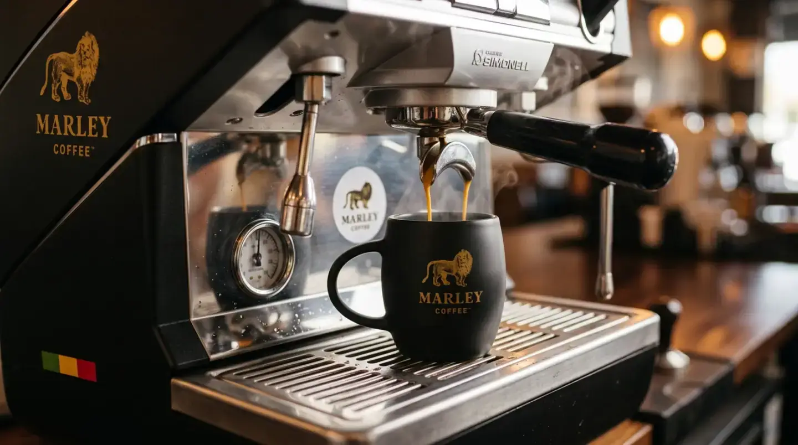
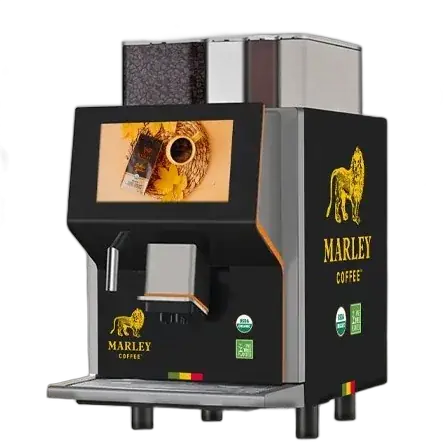

Marley Coffee Empresas · Conveniencia
Café para tu local de conveniencia, con cuentas claras.
Estima el consumo por jornada y cuéntanos cómo atiendes tu local. Las condiciones se confirman en tu propuesta.
Video detenido por tu preferencia de movimiento. Se mantiene la imagen fija.
Formulario corto y un diagnóstico de 3 pasos. Pedir tu propuesta no te obliga a nada.
- Propuesta para operación de conveniencia
- Productos y máquina según evaluación
- Condiciones por escrito
Parte por aquí
¿Cuántas tazas vendes o sirves al día?
Calcula el consumo con tus tazas por jornada, días abiertos y receta.
Consumo mensual estimado
kg de café
- Tazas al día
- Días de atención
- Gramos por taza (ejemplo)
- Tazas al mes
- Café al mes
Fórmula: tazas al día × días de atención al mes × gramos por taza ÷ 1.000.
Supuestos: Ingresa tazas promedio y días abiertos al mes; los gramos por taza son un supuesto editable de ejemplo.
Es un cálculo orientativo. Los gramos por taza son un supuesto: cámbialos por tu receta. El consumo real se ajusta en tu propuesta.
Usar este cálculo en mi propuestaCómo funciona
De tus tazas a tu propuesta, en tres pasos.

- 01
Cuéntanos de tu tienda
Tazas, horarios y cómo se ofrece café en tu local.
- 02
Recibe tu recomendación
Máquina y productos según tu servicio. Si ya sabes qué máquina quieres, partimos de ahí.
- 03
Instalación y reposición
Coordinamos la puesta en marcha y la reposición de tus productos.
Las condiciones del servicio se confirman por escrito en tu propuesta.
Guía para planificar el café de tu negocio Ver productos y packs
Cuentas claras
Lo que queda por escrito antes de firmar.
Qué incluye
La máquina, los productos y los servicios de tu propuesta, uno por uno.
Quién responde
A quién llamas si algo falla y por qué canal.
Qué documento recibes
El documento y las condiciones se confirman en la propuesta.
Cómo se termina
Las condiciones para cerrar el servicio, sin letra chica.
Las condiciones comerciales las confirma el equipo de Marley Coffee en tu propuesta.
Tu propuesta
Pide tu propuesta.
Deja tus datos y sigue con un diagnóstico de 3 pasos.
- Recibimos tu solicitud.
- Sigues con un diagnóstico de 3 pasos.
- Una persona del equipo revisa tu propuesta.
Solicitud recibida
Recibimos tu solicitud.
Sigue con un diagnóstico de 3 pasos para armar tu propuesta. Una persona del equipo la revisa antes de enviártela.
Continuar con el diagnóstico